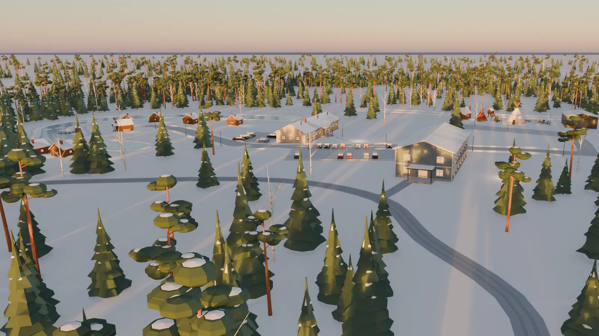
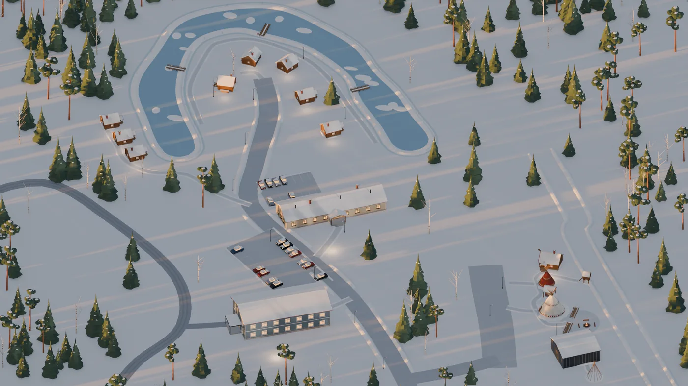
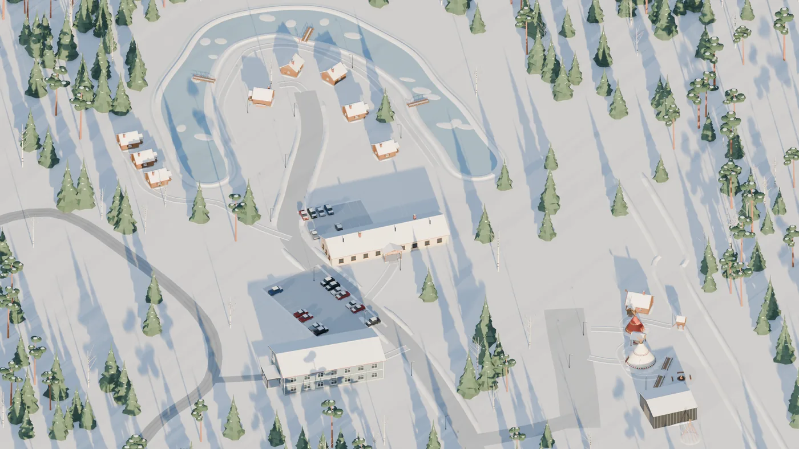
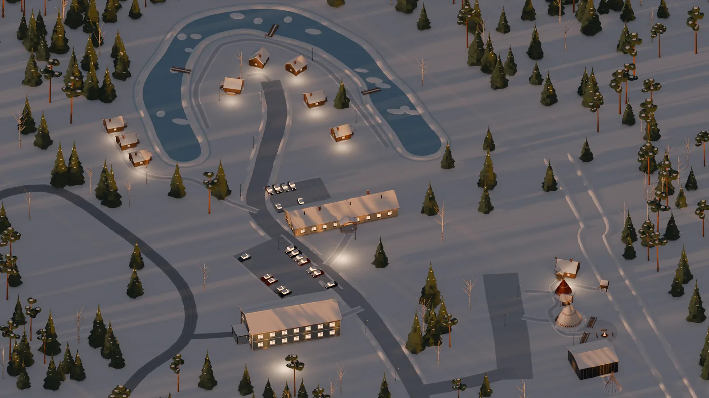
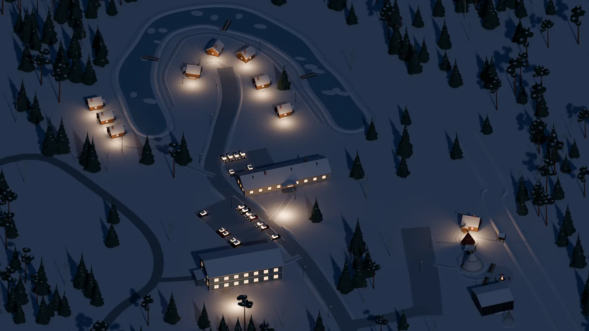

Нефтеюганск, ул. Ленина, 7
Сибирский двор
Один зимний день в черте города: утром — лыжня у соседей, днём — чум ханты, вечером — баня на дровах, ночью — ужин в «Сибири».
- 4,3 Яндекс Карты · 379 оценок
- 4,4 2ГИС · 119 оценок

09:40
-
Утро
После лыжни
Городская лыжная база — наши соседи по адресу. Петля трассы рядом с двором: прошли круг — идите греться к нам.
Прокат и расписание — у лыжной базы.
-
День
В чуме
Этнодеревня — воссозданное стойбище ханты на полутора гектарах: белый чум с орнаментом, «красный» гостевой чум, хантыйский дом, лабаз на сваях и хлебная печь под навесом.
Программы с 12:00 до 16:00, по записи.
-
Вечер
В бане
Бани на дровах у пруда — разного размера, от двоих до двадцати человек. У каждой своя площадка с мангалом и беседкой.
«Парилка огонь. Очень жаркая.»Анна Садреева, Яндекс Карты
-
Ночь
В «Сибири»
Кафе на 100 мест: оленина, заливное, манты. Банкеты, свадьбы и корпоративы — в том же зале.
Днём здесь ланч за 350 ₽.
3D-макет по мотивам спутникового снимка, не фото и не в масштабе
Карта двора
Наведите на постройкуНажмите на постройку
Подскажем, что это и когда там лучше, и добавим в ваш день.




Условная схема по мотивам спутникового снимка, не в масштабе.
Собрать день
Выберите, чем занять сутки — заявку напишем сами
Гости о дворе
«Прямо в городе, но будто в тайгу попали!»
Лагерь «Инсайт» о смене в этнодеревне, ВКонтакте, 14.06.2026
- 4,3Яндекс Карты
379 оценок, 96 отзывов - 4,42ГИС
119 оценок - 5,0Этнодеревня ВКонтакте
7 отзывов
«Самые лучшие бани для парки»
Николай Тихонов · Яндекс Карты · январь 2026
«Метель не помешала нам погрузиться в быт и традиции»
Анастасия Давыдова · ВКонтакте · 24.03.2025
«Приятно удивило, что в Юганске есть такие места»
Валерия Зеленская · Яндекс Карты · 10.11.2023
Коротко о важном
Когда работает этнодеревня?
С 12:00 до 16:00, по предварительной записи: +7 982 595-88-85.
Где взять лыжи?
На городской лыжной базе, ул. Ленина, 7 к1. Это наши соседи: прокат и часы работы уточняйте у них.
На сколько человек бани?
Бани разного размера — от компактных до больших, на 2–20 человек. У каждой своя площадка с мангалом и беседкой.
Можно приехать классом?
Да, есть экскурсионная программа для школьников — 400 ₽ с человека.
Есть ли доступная среда?
Этнодеревня заявляет доступную среду для людей с ОВЗ. Детали лучше уточнить по телефону перед поездкой.
Как доехать?
Нефтеюганск, ул. Ленина, 7. Въезд с улицы Ленина, парковка у кафе «Сибирь».